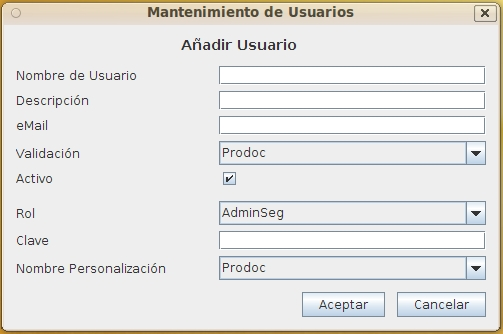

Mantenimiento Usuarios
Al seleccionar en el formulario de Lista Usuarios las opciones de Alta, Baja, Modificación o Copia de Usuarios aparecerá este formulario con diversos campos activados o desactivados.
Este formulario contiene la información:
- Nombre identificativo: Identificador del Usuario cuyo valor no puede repetirse ni cambiar una vez asignado. Puede tener una longitud máxima de 32 caracteres. (Ej. "AdaByron")
- Descripción del Usuario: Descripción que permita ampliar información del usuario. Puede tener una longitud máxima de 128 caracteres. (Ej.: "José Fernandez Gomez Gonzalez")
- Correo Electrónico:Correo electrónico del usuario. Actualmente no hay integración con servidor de correo y solo se utilizará como documentación.
- Nombre del sistema de Autenticación: Indica el nombre del sistema de autenticación que utilizará el usuario entre los definidos (Lista Sistemas Autenticación).
- Indicador de si el usuario está activo: Si esta opción está marcada, el usuario está activo y puede conectarse al sistema. Permite desactivar temporalmente un usuario sin borrarle.
- Nombre del rol asignado: Indica el nombre del rol asignado que utilizará el usuario entre los definidos (Lista Roles).
- Clave de acceso: Clave de acceso. Dependiendo del sistema de autenticación, la clave puede asignarse desde OPD o deberá asignarse en el sistema de autenticación.
- Nombre de la personalización: Indica el nombre de la personalización que utilizará el usuario entre los definidos (Lista Personalizaciones).

Ver: Lista Usuarios
Índice Ayuda OpenProdoc